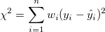

線形フィットダイアログボックス
LR-Dialog
線形フィットダイアログは、データを線形にフィットさせることが出来ます。
y = β0 + β1x
Β00 は直線の切片、β1 は直線の傾きです。

サポート情報
Originの線形フィットダイアログボックスは、アクティブなワークシートまたはグラフから開けます。メインメニューから以下のように選択します。
- 解析：フィット：線形フィット（ダイアログを開く...）をクリックします。
関連情報：
再計算
| 再計算
|
分析結果の再計算の設定を変更します。
詳細情報は、 分析結果の再計算をご覧下さい。
|
入力
複数データフィットモード
| 複数データフィットモード
|
このオプションは入力データセットが複数ある場合のみ利用できます。
- 独立フィット - 統合レポート
- 入力データセットは別々にフィットされます。レポートは1つのシートに集約されます。
- 独立フィット - 統合レポート
- 入力データセットは別々にフィットされます。レポートは異なるワークシートに出力されます。
- 結合
- すべての入力データセットは、連結され、1つの曲線としてフィットされます。
|
入力データ
| 範囲
|
入力XYデータ範囲を指定
X
- 曲線のX列
Y
- 曲線のY列
エラー
- Yエラー列
行
- フィットするX列の範囲を指定します。行が行によるまたは Xによるにセットされているとき、開始と終了 のテキストボックスを使って、フィットする範囲を指定します。
-
- データセットのすべての行でフィットします。
- 行インデックスでX列の範囲を指定します。最終 に 0 と入力すると、入力データ範囲の「最後の行」を指定します。
- X値でX列の範囲を指定します。Xによるの設定では、実際のXの数値の代わりに名前付き範囲を使用できます。詳細は、こちらのOriginLabのブログを参照してください。
- グラフまたはワークシートから複数のXYデータセットをフィットするとき、行範囲をすべてに適用のメニューを使って、同じX行範囲をすべての入力データに適用します。範囲1の入力列の行範囲を指定し、範囲1の右にある
 ボタンをクリックし、そしてコンテキストメニューから行範囲をすべてに適用を選択します。 ボタンをクリックし、そしてコンテキストメニューから行範囲をすべてに適用を選択します。
詳細情報は、 入力データの指定をご覧下さい。
|
フィット制御
| 誤差を重みとする
|
重み付けの値としてエラーバーを使用します。指定したエラー列が選択されている場合のみ利用できます。
- どのデータも重みづけに使用しません
 = エラー列のi番目の行の値 = エラー列のi番目の行の値- 
 - ここで
 = エラー列のi番目の行の値 = エラー列のi番目の行の値
詳細は、重み付けフィットを参照してください。
|
| 切片固定
|
指定した値に切片をｌ固定します。
|
| 切片固定：
|
切片の値を指定します。
|
| 勾配固定
|
指定した値に勾配をｌ固定します。
|
| 勾配固定
|
勾配の値を指定します。
|
| sqrt(補正カイ二乗値)のスケールエラー
|
重み付けのあるフィットの場合に利用できます。このチェックボックスはフィット処理で出力されるパラメータの誤差だけに影響し、フィット処理やデータには影響しません。デフォルトでチェックされ、共分散行列は^{-1}") で計算できます。そうでない場合、 で計算できます。そうでない場合、^{-1}\,\!") です。 です。
チェックがついている場合、補正カイ二乗を使って誤差分散を推定して、パラメータの標準誤差を算出します。また、誤差分散が1の場合は、パラメータ標準エラーは算出されません。
 | このオプションはデフォルトでチェックが入っていて、パラメータの標準誤差と他のソフトウェアで比較できる関連結果を保存するようになっています。機械的重み付けでデータをフィットする場合は、パラメータの標準誤差が重みに影響するため、このオプションのチェックを外すことが推奨されています。
|
|
| 図上値によるフィット
|
現在の軸スケールでの見かけの値を使ってフィットを行います。例えば、指数関数的に減衰するデータを対数スケールでプロットした場合にこのチェックを付けると、直線でフィットさせることができます。このチェックボックスにチェックを付け、データにそれに関連する誤差値がある場合、Originは正または負の誤差のうち大きい方を重みとして使用します。
|
| 無効な重み付けデータの扱い
|
- 重み付けデータに無効な値がある場合、エラーを返します。
- カスタム値で無効重み付けデータを置き換えます。
|
| カスタム重み
|
カスタム重みの値を設定します。カスタム値で置き換えを選択すると、このオプションを使うことができます。
|
 | 図上値によるフィットは軸タイプを線形からLag10などに変更したグラフウィンドウをアクティブにしてフィットを実行した時に便利です。このオプションにチェックを付けた場合、まず軸のタイプに従って生データを新しいデータ空間に変換し、変換されたデータに対してフィッティングを実行します。そうでなければどの軸タイプを使っているかに関わらず、Originは常に生データを直接フィットします。図上値によるフィットは生のワークシートデータに対して直接フィットを実行する場合と同等です。すべての残差解析は図上値によるフィットでも利用できます。外れ値の識別は図上値によるフィットでもサポートされています。
|
値
| フィットパラメータ
|
値
- パラメータの値
標準誤差
- パラメータの標準誤差
LCL
- 下側信頼水準
UCL
- 上側信頼限界
曲線の信頼水準(%)
- 回帰に対する信頼水準。
t値
- ｔ検定値のパラメーター
prob>|t|
- ｐ値のパラメーター
CI 半幅
- 信頼区間の半幅
詳細については、パラメータをご覧下さい。
|
| フィット統計
|
ポイント数
- フィットポイントの合計数
自由度
- モデル自由度
自由度あたりのカイ二乗
- 自由度あたりカイ二乗値（自由度で除算された残差平方和と等しい）
R値
- 値（
 の平方根と等しい） の平方根と等しい）
残差平方和
- 残差平方和 (RSS), または平方誤差の総和
ピアソンのｒ
- ピアソン相関係数
R二乗(COD)
- 決定係数
補正R二乗
- 補正した決定係数
Root MSE(SD)
- 残差標準偏差または平均平方誤差の平方根
残差ノルム
- 残差ノルム、RSSの平方根に等しい
詳細については、統計をご覧下さい。
|
| フィットの概要
|
フィット概要テーブルを出力します。このテーブルは、各曲線 (依存データ) の行ごとにフィットパラメータを整理します。
|
| ANOVA
|
分散分析表を出力するかどうか指定します。
詳細は、ANOVA表を参照してください。
|
| 適合度検定
|
特定のモデルの妥当性を測定するために使用した複製データの適合度検定結果の出力
詳細は、適合度検定表を参照してください。
|
| 共分散行列
|
共分散行列を出力するか指定します。
詳細情報は、共分散および相関行列を確認してください。
|
| 相関行列
|
相関行列を出力するか指定します。
詳細情報は、共分散および相関行列を確認してください。
|
| 外れ値
|
外れ値のリストの出力
|
| X切片
|
フィット曲線のY=0での切片
|
残差解析
計算手法を選択して残差を出力します。詳細情報は、 グラフィカルな残差分析をご覧下さい。
| 標準
|
通常の残差を出力
|
| 正規化
|
正規化した残差を出力
|
| スチューデント化
|
スチューデント化(内部)した残差を出力
|
| スチューデント化削除
|
スチューデント化(外部)した残差を出力
|
出力
| グラフ
|
結果表
- ソース/レポートグラフにフィット結果を表示するか指定します。
-
- グラフにフィット結果表を追加しません。
- ソースグラフにフィット結果表を追加します。入力データがグラフの場合に使用できます。
- レポートシートの埋め込みグラフにフィット結果表を追加します。レポートシートに1つ以上のグラフがある場合、表は最初のグラフに追加されます。
- ソースグラフとレポートシートグラフの両方に結果表を追加します。
- 表スタイルテンプレート
- 結果のグラフで使っている、表スタイルテンプレートを指定します。
- 表中の値
- 表で表示する値を指定します。
- 表中のエラー値のカスタム表示
- グラフ上の結果表のエラー値に関して、小数点以下の桁を指定します。
グラフを縦列に配置します。
- 数字 l を指定します。結果シートで、l 個のグラフの行で並べられます。
グラフ中に同じ形式のプロットを配列
- このチェックボックスが選択されている場合、同じタイプのプロットは1つのグラフ内に配置されます。
1つのグラフに残差プロットを配置
- このチェックボックスが選択されている場合、残差プロットは1つのグラフ内に配置されます。
|
| フィット結果シートの配置
|
このドロップダウンリストは、複数のデータセットが入力されている場合にのみ有効です。フィット結果のワークシートの配置方法を指定します。
- 統合
- すべての結果はワークシート内でまとめられます。
- 分離
- 結果は個別のワークシートに出力します。
|
| データセット識別子
|
出力でソースデータのラベルの付け方を指定します。
- 識別子
- 次をソースデータの認識に使用します。プロットしたデータで線形フィットを行うとき（例：グラフウィンドウをアクティブにしてフィット）には、 プロット凡例 オプションが追加されます。
-
- ソースデータを参照するには 範囲シンタックス を使います。
- 存在する場合はロングネームを使用し、ない場合はショートネームを使用します。
- 列のショートネームを使用します。
- シート表示名を使用します。
- 存在する場合はロングネームを使用し、ない場合はショートネームを使用します。
- 列のショートネームを使用します。
- 列のロングネームを使用します。
- 列の単位を使用します。
- 列のコメントを使用
- アクティブなウィンドウがグラフウィンドウの時に設定できます。プロットがフィットされるときの凡例ラベルが使われます。
- ソースデータを認識するためにカスタム表記を使用します。このオプションは、識別子を入力するために カスタム識別子 ボックスを追加します。この識別子表記の入力には、これらのトピックスをご参照ください。
- 属性
- Xデータセット、Yデータセットなどを指定し、識別子 を設定します。＜自動＞を選択して、独立変数（大抵の場合Y列）を使います。全て識別子に対して、この操作ができるわけではありません。
- フラットシートに識別子を表示
- 多くのOriginの分析操作では、折りたたみ式分析レポートシートの他に通常のワークシートにもデータが出力されます。このフラットシートで識別子を使用するか指定します。
|
| レポート表
|
レポート表の出力場所を指定します。
- ブック
- 目的のワークブックを指定します。
- レポートワークシート表を出力しません。
- ワークブックは自動で選択されます。
- 元データのワークブック
- 新しいワークブック
- 指定した既存のワークブック
- ブック名
- 出力するワークブック名
- シート
- 常に新しいシート <新規>に出力
- シート名
- 出力するワークブック名
- 結果ログ
- 結果ログにレポートを出力するかどうかを指定します。
- スクリプトウィンドウ
- スクリプトウィンドウにレポートを出力するかどうかを指定します。
- ノートウィンドウ
- 保存先のノートウィンドウを指定します。
- どのノートウィンドウにも出力しません。
- 新しいノートウィンドウに出力します。ここにノートウィンドウの名前を入力します。
|
| フィット曲線
|
フィット値を出力するワークブックとワークシートを指定します。
- ブック
- 目的のワークブックを指定します。
- ワークブックは自動で選択されます。
- 元データのワークブック
- レポートテーブルを含むワークブック
- 新しいワークブック
- 指定した既存のワークブック
- ブック名
- 出力するワークブック名
- シート
- 目的のワークシートを指定します。
- 元データのワークシート
- 新しいワークシート
- 指定した既存のワークシート
- シート名
- 出力するワークシート名
|
| フィットの残差
|
- ブック
- 目的のワークブックを指定します。
- フィットした値を持つワークブック
- 元データのワークブック
- 新しいワークブック
- 指定した既存のワークブック
- ブック名
- 出力するワークブック名
- シート
- 目的のワークシートを指定します。
- フィットした値を持つワークシート
- 新しいワークシート
- 指定した既存のワークシート
- シート名
- 出力するワークシート名
|
| 特定X/Yの検索
|
特定X/Yの検索テーブルの出力先を指定します。このブランチは、 YからXを検索チェックボックスまたはXからYを検索チェックボックスのどちらかが選択されている場合のみ利用できます。
- 以下の特定X/Yの検索もご覧ください。
- ブック
- 目的のワークブックを指定します。
- フィットした値を持つワークブック
- ソースデータを持つワークブック
- 新しいワークブック
- 指定した既存のワークブック
- ブック名
- 出力するワークブック名
- シート
- 目的のワークシートを指定します。
- フィットした値を持つワークシート
- 新しいワークシート
- 指定した既存のワークシート
- X検索のシート名
- 出力するX検索 ワークシート名
- Y検索のシート名
- 出力するY検索ワークシート名
|
| オプショナルなレポートテーブル
|
レポートワークシートに出力する項目を指定します。
- 備考の方程式
- レポートテーブルの関数式の形式を指定します。
- 関数式をパラメータ名で出力します。
- フィットしたパラメータの値で関数式を出力します。
- ノート
- ノート表
- 入力データ
- 入力データのテーブル
- マスクされたデータ
- マスクデータのテーブル
- 欠損データ
- 欠損データのテーブル
|
フィット曲線のプロット
| レポート表中にプロット
|
選択されていると、フィット曲線がレポートテーブルに追加されます。
|
| ソースグラフ上にプロットする
|
このオプションは入力データセットがグラフの場合のみ利用できます。元のグラフにフィットした曲線を追加するかどうかを指定します。
- フィット曲線は元のグラフに追加されません。
- フィット曲線が元のグラフに追加されます。
- フィット曲線とプロットタイプドロップダウンリストで指定したプロットが元のグラフに追加されます。
- このオプションは入力データセットがグラフで、 連結フィットモードが選択されている場合に利用できます。
|
| 残差 vs. 独立のプロット積み重ね
|
フィット曲線に残差 vs. 独立のプロットを積上げます。
|
| ソースグラフの凡例を更新
|
元のグラフの凡例を更新するかどうかを指定します。
|
| ソースグラフの色を複数プロットに使う
|
ソースグラフの色設定を複数のフィット曲線を表示する際に使用するか指定します。
|
| Xデータタイプ
|
フィット曲線のX値を生成する方法を指定します。
- フィット曲線のX値が等間隔な線形スケールにプロットされます。
- フィット曲線のX値が対数スケールにプロットされます。
- フィット曲線のX値は入力X値と同じになります。
- フィット曲線のX値は元のグラフのスケールタイプを使ってプロットされます。
- このオプションは入力データセットがグラフの場合のみ利用できます。
- ポイント
- このオプションは、Xデータタイプが均一Xまたは対数間隔の場合のみ利用できます。フィット曲線の合計データポイント数を指定します。
- 範囲
- このオプションは、Xデータタイプが均一Xまたは対数間隔の場合のみ利用できます。これは、フィット曲線のX値の範囲を指定します。次のオプションから1つを選択します。
- X範囲 ± ％
- X範囲 + X切片 ± ％
- 全X軸範囲
- カスタム
- 範囲マージン(%)
- このオプションは、Xデータタイプが均一Xまたは対数間隔で、範囲がX範囲 ± ％になっている場合に利用できます。フィット曲線を拡張する範囲の余白を指定するのに使用します。
- 最小/最大
- このオプションは、Xデータタイプが均一Xまたは対数間隔で、範囲がカスタムになっている場合に利用できます。この2つのテキストボックスで、フィット曲線の最小と最大のX値を指定します。
|
| 信頼帯
|
これにチェックを入れると、信頼帯が2つの線とその間の塗りつぶし部分としてフィット曲線に追加されます。作図の詳細ダイアログのグラフの線タブで推定帯の塗りつぶしに関する設定を編集できます。
詳細情報は、信頼帯と推定帯を確認してください。
|
| 推定帯
|
これにチェックを入れると、推定帯が2つの線とその間の塗りつぶし部分としてフィット曲線に追加されます。作図の詳細ダイアログのグラフの線タブで推定帯の塗りつぶしに関する設定を編集できます。
詳細情報は、信頼帯と推定帯を確認してください。
|
| 曲線の信頼水準(%)
|
信頼帯と予測帯の信頼水準を入力します。
|
| 楕円
|
このチェックボックスをチェックすると、指定した信頼水準に基づいて信頼楕円をフィット曲線プロットに追加します。
- データポイント
- 楕円に使用するのデータポイント数を指定します。
- 平均
- この項目をチェックすると、母平均に対する信頼楕円を追加します。
- 信頼水準(%)
- 信頼楕円に対する信頼水準を指定します。
- 推定
- この項目をチェックすると、推定に対する信頼楕円を追加します。
- 信頼水準(%)
- 信頼楕円に対する信頼水準を指定します。
詳細は、信頼楕円を参照してください。
|
X/Y検索
XからYを検索テーブルは、与えられた独立変数Xの値から対応する従属変数Yの値を取得します。YからXを検索テーブルは、与えられた従属変数Yから対応する独立変数Xの値を取得します。
詳細は、X/YからY/Xを検索 – 標準曲線をご覧下さい。
| YからXを検索
|
YからXを検索テーブルを生成します。
- 95%信頼区間を計算
- 95％信頼区間を計算して出力します。重み付けを設定した場合や固定パラメータがある場合は、信頼区間は計算されません。
|
| XからYを検索
|
XからYを検索テーブルを生成します。
- 95%信頼区間を計算
- 95％信頼区間を計算して出力します。
|
|
Note: 図上値によるフィットを使用する場合、「XからYを検索」と「XからYを検索」のテーブルは変換されたスケールで値を探します。
|
残差プロット
この項目を使用して残差プロットを編集します。詳細情報は、 グラフィカルな残差分析をご覧下さい。
| 残差プロット
|
この項目を使用して残差プロットを編集します。
- 残差タイプ
- ドロップダウンリストから残差の種類を指定します。
- 標準
- 正規化
- スチューデント化
- スチューデント化削除
選択した残差の種類によって、6つの残差プロットを出力することができます。
- 残差 vs. 独立のプロット
- 残差プロットのヒストグラム
- 残差 vs. 予測値のプロット
- 残差 vs. データプロットの順序
- 残差のラグプロット
- 正規残差確率プロット
|